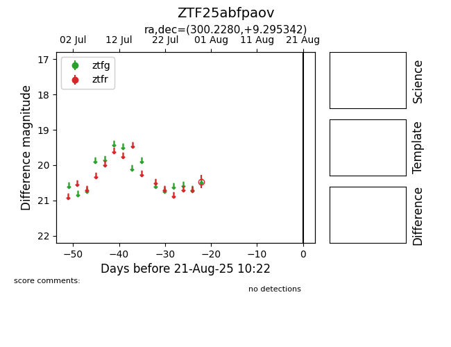

Target ZTF25abfpaov at 2025-08-21 10:22, see:
FINK: fink-portal.org/ZTF25abfpaov
Lasair: lasair-ztf.lsst.ac.uk/objects/ZTF25abfpaov
ALeRCE: alerce.online/object/ZTF25abfpaov
alt names
ZTF25abfpaov (ztf,alerce)
coordinates:
equatorial (ra, dec) = (300.2280,+9.29534)
galactic (l, b) = (49.3810,-10.86731)
photometry
